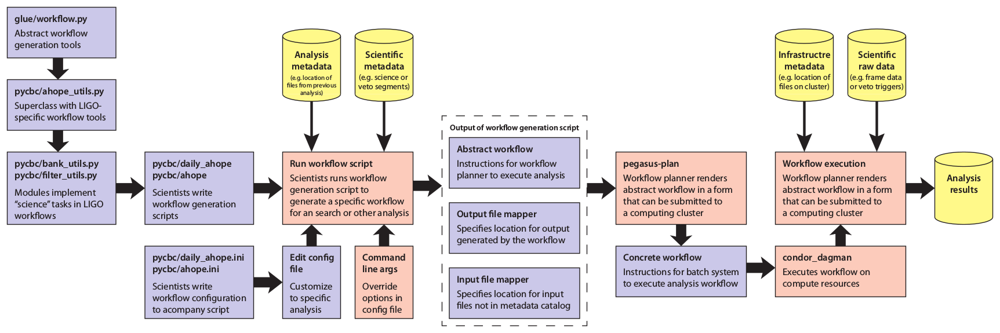

Workflow: the inspiral analysis workflow generator (pycbc.workflow)
Introduction
Pycbc’s workflow module is a tool used to create the workflows needed to perform coincident analyses of gravitational-wave data searching for compact-binary-coalescences using matched-filtering.
The pycbc workflow runs through a number of stages, which are designed to be as independent of each other as possible, while also allowing an integrated end-to-end workflow to be constructed.
Documentation of the workflow module and how to run it can be found below.
Please see the following poster, presentied at the March LVC meeting, 2014, for an introduction to the workflow module (referred to as “ahope”). Especially see the following top-level workflow generation model.
{kind=link}
Workflow module documentation
The following contains a list of the sub-modules in pycbc’s workflow module, a bried description of what each does, and a link to documentation on how to use each module. Collectively these pages should provide complete details on how to set up a workflow from scratch.
Basics and overview
The following page gives a description of how the workflow module expects configuration files to be layed out and how the basic command-line interface functions. If writing a workflow for the first time we recommend you read through this page!
Generating segments
Obtain the science segments and data-quality segments from making queries to a segment database.
Obtaining data
Run queries to the datafind server to find the needed frames and test these for consistency if desired
Injection generation
Generate injection files for use later in the analysis
Template bank
Construct a template bank, or banks, of CBC waveforms that will be used to matched-filter the data with.
Split table
Split an output file into numerous parts to allow parallel analysis. Normally used to split the template bank up to allow matched-filtering in parallel
Matched-filtering
Perform the matched-filters and calculate any signal-based consistency tests that should be calculated.
Coincidence
Determine if “triggers” seen in one detector are also seen in other detectors. Also check for coincidence between time-slid triggers for background evaluation
Method documentation
The documentation for all functions/modules within pycbc.workflow follows, unless you are looking for a specific function, it might be easier to navigate through the section links above.
- pycbc.workflow package
- Submodules
- pycbc.workflow.coincidence module
CensorForegroundMergeExecutablePyCBCAddStatmapPyCBCBank2HDFExecutablePyCBCCombineStatmapPyCBCDistributeBackgroundBinsPyCBCExcludeZerolagPyCBCFindCoincExecutablePyCBCFindSnglsExecutablePyCBCFitByTemplateExecutablePyCBCFitOverParamExecutablePyCBCHDFInjFindExecutablePyCBCSnglsStatMapExecutablePyCBCSnglsStatMapInjExecutablePyCBCStatMapExecutablePyCBCStatMapInjExecutablePyCBCTrig2HDFExecutableconvert_bank_to_hdf()convert_trig_to_hdf()find_injections_in_hdf_coinc()get_ordered_ifo_list()make_foreground_censored_veto()merge_single_detector_hdf_files()rerank_coinc_followup()select_files_by_ifo_combination()setup_combine_statmap()setup_exclude_zerolag()setup_interval_coinc()setup_interval_coinc_inj()setup_sngls()setup_sngls_inj()setup_sngls_statmap()setup_sngls_statmap_inj()setup_statmap()setup_statmap_inj()setup_trigger_fitting()
- pycbc.workflow.configparser_test module
- pycbc.workflow.configuration module
- pycbc.workflow.core module
CalledProcessErrorModExecutableExecutable.ALL_TRIGGERSExecutable.DO_NOT_KEEPExecutable.FINAL_RESULTExecutable.INTERMEDIATE_PRODUCTExecutable.KEEP_BUT_RAISE_WARNINGExecutable.MERGED_TRIGGERSExecutable.add_ini_profile()Executable.add_opt()Executable.create_node()Executable.current_retention_levelExecutable.file_input_optionsExecutable.get_opt()Executable.get_transformation()Executable.has_opt()Executable.ifoExecutable.time_dependent_optionsExecutable.update_current_retention_level()Executable.update_current_tags()Executable.update_output_directory()
FileFileListFileList.categorize_by_attr()FileList.convert_to_lal_cache()FileList.dump()FileList.entry_classFileList.find_all_output_in_range()FileList.find_output()FileList.find_output_at_time()FileList.find_output_in_range()FileList.find_output_with_ifo()FileList.find_output_with_tag()FileList.find_output_without_tag()FileList.find_outputs_in_range()FileList.get_times_covered_by_files()FileList.load()FileList.to_file_object()
NodeSegFileWorkflowadd_workflow_settings_cli()configparser_value_to_file()get_full_analysis_chunk()get_random_label()make_analysis_dir()make_external_call()resolve_td_option()resolve_url_to_file()
- pycbc.workflow.datafind module
convert_cachelist_to_filelist()datafind_keep_unique_backups()get_missing_segs_from_frame_file_cache()get_science_segs_from_datafind_outs()get_segment_summary_times()log_datafind_command()run_datafind_instance()setup_datafind_from_pregenerated_lcf_files()setup_datafind_runtime_cache_multi_calls_perifo()setup_datafind_runtime_cache_single_call_perifo()setup_datafind_runtime_frames_multi_calls_perifo()setup_datafind_runtime_frames_single_call_perifo()setup_datafind_workflow()
- pycbc.workflow.dq module
- pycbc.workflow.grb_utils module
PycbcGrbInjFinderExecutablePycbcGrbTrigClusterExecutablePycbcGrbTrigCombinerExecutablebuild_segment_filelist()fermi_core_tail_model()generate_tc_prior()get_sky_grid_scale()make_gating_node()make_pygrb_info_table()make_pygrb_injs_tables()make_pygrb_plot()make_skygrid_node()set_grb_start_end()setup_pygrb_minifollowups()setup_pygrb_pp_workflow()setup_pygrb_results_workflow()
- pycbc.workflow.inference_followups module
create_fits_file()create_posterior_files()get_diagnostic_plots()get_plot_group()make_diagnostic_plots()make_inference_acceptance_rate_plot()make_inference_dynesty_run_plot()make_inference_dynesty_trace_plot()make_inference_inj_recovery_plot()make_inference_plot()make_inference_plot_mcmc_history()make_inference_posterior_plot()make_inference_pp_plot()make_inference_pp_table()make_inference_prior_plot()make_inference_samples_plot()make_inference_skymap()make_inference_summary_table()make_posterior_workflow()
- pycbc.workflow.injection module
- pycbc.workflow.jobsetup module
JobSegmenterLalappsInspinjExecutableLigolwAddExecutablePyCBCInspiralExecutablePyCBCMultiInspiralExecutablePyCBCTmpltbankExecutablePycbcConditionStrainExecutablePycbcCreateInjectionsExecutablePycbcHDFSplitInjExecutablePycbcInferenceExecutablePycbcSplitBankExecutablePycbcSplitBankXmlExecutablePycbcSplitInspinjExecutableidentify_needed_data()int_gps_time_to_str()multi_ifo_coherent_job_setup()select_generic_executable()select_matchedfilter_class()select_tmpltbank_class()sngl_ifo_job_setup()
- pycbc.workflow.matched_filter module
- pycbc.workflow.minifollowups module
PlotQScanExecutableSingleTemplateExecutableSingleTimeFreqExecutableget_single_template_params()grouper()make_coinc_info()make_inj_info()make_plot_waveform_plot()make_qscan_plot()make_single_template_files()make_single_template_plots()make_singles_timefreq()make_skipped_html()make_sngl_ifo()make_trigger_timeseries()make_upload_files()setup_foreground_minifollowups()setup_injection_minifollowups()setup_single_det_minifollowups()setup_upload_prep_minifollowups()
- pycbc.workflow.pegasus_sites module
- pycbc.workflow.pegasus_workflow module
- pycbc.workflow.plotting module
PlotExecutableexcludestr()make_bank_compression_plots()make_binned_hist()make_coinc_snrchi_plot()make_dq_flag_trigger_rate_plot()make_dq_segment_table()make_farstat_plot()make_foreground_table()make_foundmissed_plot()make_gating_plot()make_ifar_plot()make_inj_table()make_range_plot()make_results_web_page()make_seg_plot()make_seg_table()make_segments_plot()make_sensitivity_plot()make_single_hist()make_singles_plot()make_snrchi_plot()make_snrifar_plot()make_snrratehist_plot()make_spectrum_plot()make_template_bin_table()make_template_plot()make_throughput_plot()make_veto_table()requirestr()
- pycbc.workflow.psd module
- pycbc.workflow.psdfiles module
- pycbc.workflow.segment module
- pycbc.workflow.splittable module
- pycbc.workflow.tmpltbank module
- pycbc.workflow.versioning module
- Module contents